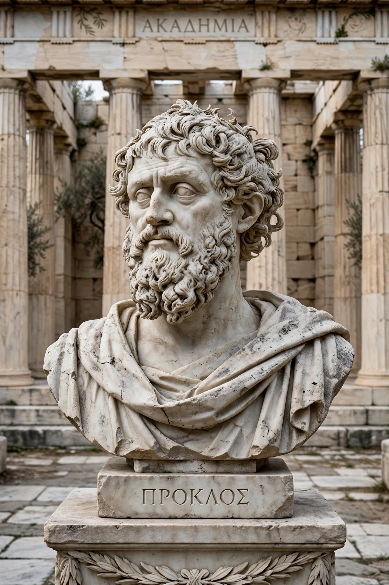

| Born | 8 February 412, Constantinople |
|---|---|
| Died | 17 April 485 (aged 73), Athens |
| Era | Late antique philosophy |
| School | Neoplatonism |
| Institutions | Platonic Academy, Athens (head from c. 437) |
| Main works | Elements of Theology; Platonic Theology; commentaries on Plato |
| Teachers | Plutarch of Athens, Syrianus |
Proclus Lycius (Greek: Πρόκλος ὁ Διάδοχος, "Proclus the Successor"; 412 – 17 April 485) was a Greek Neoplatonist philosopher, the last major classical philosopher of antiquity. As head (diadochos) of the Platonic Academy in Athens for nearly half a century, he fashioned the teachings of Plotinus, Iamblichus, and his master Syrianus into the most complete systematic metaphysics of the ancient world, and through Latin, Arabic, and Byzantine intermediaries his thought profoundly shaped medieval Christian, Islamic, and Jewish philosophy.
Proclus was born in Constantinople to wealthy parents from Xanthus in Lycia, and studied rhetoric and law at Alexandria before turning — under the philosopher Olympiodorus — to philosophy. At about twenty he moved to Athens, where he studied under Plutarch of Athens and then Syrianus, whom he succeeded as head of the Academy around 437. His pupil and successor Marinus wrote his biography, the Life of Proclus, depicting a prodigy of industry — lecturing and writing, Marinus claims, some 700 lines a day — and of pagan piety: Proclus practiced theurgy, observed the festivals of all nations, and was a vegetarian abstainer devoted especially to Athena and Asclepius. His pagan activism occasionally brought him into conflict with the Christian authorities of Athens, and he spent a year of prudent exile in Lydia.
Proclus's Elements of Theology sets out his system in 211 propositions, each proved from the preceding ones in a quasi-geometrical manner modeled on Euclid. Its key doctrines include: the absolute transcendence and unity of the One; the doctrine of the henads, a plurality of unities or "gods" beyond being through which the One is participated; the universal triadic rhythm of remaining–procession–return (mone–proodos–epistrophe) by which every effect abides in its cause, proceeds from it, and reverts upon it; and the layered hierarchy of reality — One, Intellect, Soul, Nature, Body — mediated at every level by triads. In his vast commentaries on Plato's Timaeus, Parmenides, Republic, and Alcibiades, and in the six-book Platonic Theology, Proclus elaborated a complete pagan theology, allegorically mapping the Greek pantheon onto his metaphysical hierarchy.
Proclus was a decisive, if often invisible, influence on the Middle Ages. The anonymous Christian writer Pseudo-Dionysius borrowed extensively from him, baptizing Proclean metaphysics for Christian theology. In the Islamic world the Arabic adaptation of the Elements, the Book of Causes (Liber de Causis), was long ascribed to Aristotle; when William of Moerbeke translated the Elements into Latin in 1268, Thomas Aquinas recognized the Liber de Causis as Proclean. Proclus's commentaries also preserve much of our knowledge of earlier Greek mathematics and astronomy, and his hymns are among the last monuments of Greek pagan devotion.